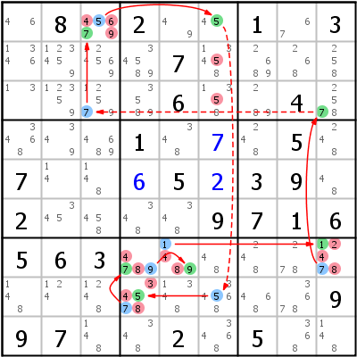

HoDoKu Lösungstechnik-Index: Beispiel für "Continuous Nice Loop/AIC Loop"

Originales Sudoku:
.8.2..1.3....7........6..4....1...5.7...5.39.2....9716563..............997..2.5..
Verwenden Sie die folgende Zeile um das Sudoku in HoDoKu zu laden:
:0706:2345689:.8.2..1.3....7........6..4....1.+7.5.7..+65+239.2....9716563..............997..2.5..:176 186 287 288 196:279 384 413 474 475 479 484 526 536 613 874 875 879 884 913:
Die folgende Darstellung kann per Zwischenablage in die meisten Sudoku-Programme eingefügt werden:
.----------------------.--------------------.-------------------. | 46 8 45679 | 2 49 45 | 1 67 3 | | 1346 123459 124569 | 34589 7 13458 | 2689 268 258 | | 13 12359 12579 | 3589 6 1358 | 289 4 2578 | :----------------------+--------------------+-------------------: | 3468 349 4689 | 1 348 7 | 248 5 248 | | 7 14 148 | 6 5 2 | 3 9 48 | | 2 345 458 | 348 348 9 | 7 1 6 | :----------------------+--------------------+-------------------: | 5 6 3 | 4789 1489 48 | 248 278 12478 | | 148 124 1248 | 34578 1348 34568 | 468 3678 9 | | 9 7 148 | 348 2 3468 | 5 368 148 | '----------------------'--------------------'-------------------'
Darstellung des Lösungsschrittes:
.-------------------------.-----------------------------.-----------------------. | 46 8 *-45-67-9 | 2 49 *45 | 1 67 3 | | 1346 123459 124569 | 34589 7 134-58 | 2689 268 258 | | 13 12359 *12579 | 3589 6 13-58 | 289 4 *2578 | :-------------------------+-----------------------------+-----------------------: | 3468 349 4689 | 1 348 7 | 248 5 248 | | 7 14 148 | 6 5 2 | 3 9 48 | | 2 345 458 | 348 348 9 | 7 1 6 | :-------------------------+-----------------------------+-----------------------: | 5 6 3 | *-47-89 *1-4-89 48 | 248 278 *1-2-47-8 | | 148 124 1248 | *-3-457-8 1348 *34568 | 468 3678 9 | | 9 7 148 | 348 2 3468 | 5 368 148 | '-------------------------'-----------------------------'-----------------------' Continuous Nice Loop 9= r7c5 =1= r7c9 =7= r3c9 -7- r3c3 =7= r1c3 =5= r1c6 -5- r8c6 =5= r8c4 =7= r7c4 =9= r7c5 =1 => r7c9<>2, r8c4<>3, r1c3,r7c459,r8c4<>4, r23c6<>5, r1c3<>6, r7c459,r8c4<>8, r1c3<>9
Copyright © 2008-12 von Bernhard Hobiger
Zuletzt geändert am 5. Mai 2025 von shorty#3746
(basierend auf dem 1to9only Github-Repo)
Alles Material auf dieser Site unterliegt der GNU FDLv1.3.